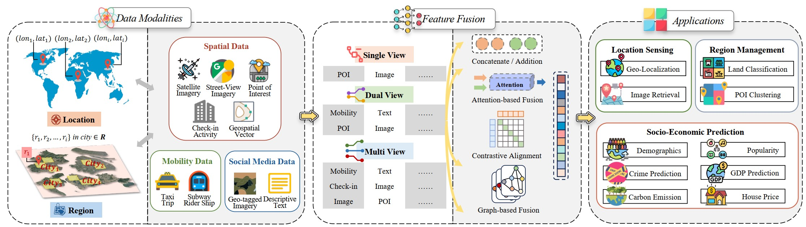
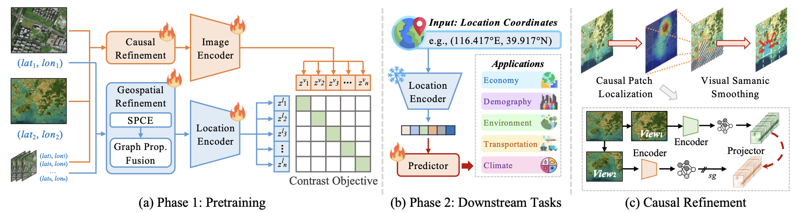
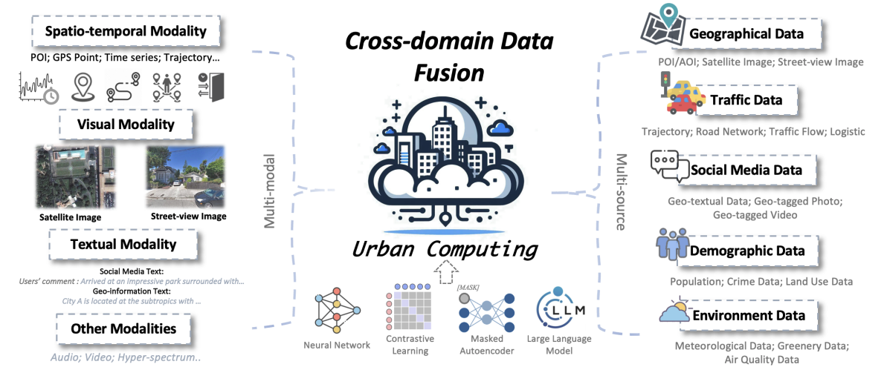
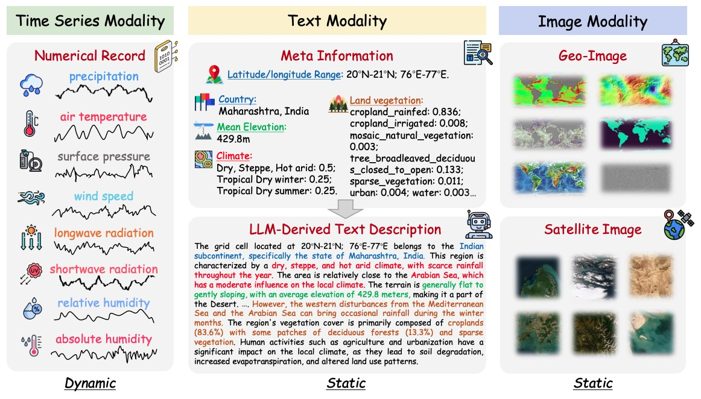
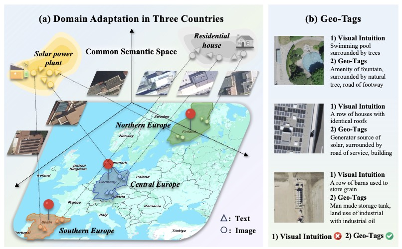
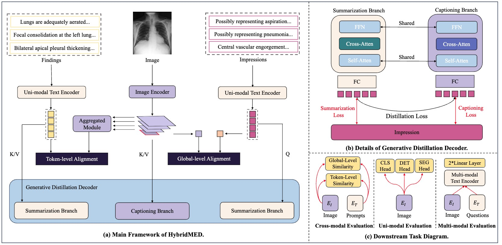
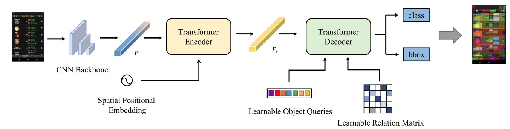

|
Xixuan Hao I'm a PhD student at HKUST(GZ), supervised by Prof. Yuxuan Liang and Prof. Yangqiu Song. Before that, I received my Master's degree from HKU. I was a research intern in CUHK(SZ) in 2023, focusing on Medical AI, working with Prof. Ruimao Zhang. I was a research intern in Microsoft Research Asia (MSRA) in 2022, working with Dr. Danqing Huang and Prof. Chin-Yew Lin, focusing on UI Object Detection. I was a research intern in The Shenzhen Institutes of Advanced Technology (SIAT), Chinese Academy of Science in 2021, working with Dr. Bin Fu and Prof. Yu Qiao, focusing on Scene Text Spotting (OCR). I'm currently interested in Urban Computing, Urban Representation Learning, Multimodal Learning and Spatio-Temporal Data Mining. |

|
Publications |
|

|
Unlocking Location Intelligence: A Survey from Deep Learning to The LLM Era
Xixuan Hao, Yutian Jiang, Xingchen Zou, Jiabo Liu, Yifang Yin, Yuxuan Liang arxiv, 2025 |
|

|
Nature Makes No Leaps: Building Continuous Location Embeddings with Satellite Imagery from the Web
Xixuan Hao, Wei Chen, Xingchen Zou, Yuxuan Liang WWW, 2025 |

|
UrbanVLP: A Multi-Granularity Vision-Language Pre-Trained Foundation Model for Urban Indicator Prediction
Xixuan Hao, Wei Chen, Yibo Yan, Siru Zhong, Kun Wang, Qingsong Wen, Yuxuan Liang AAAI, 2025 |
|

|
Deep learning for cross-domain data fusion in urban computing: Taxonomy, advances, and outlook
Xingchen Zou, Yibo Yan, Xixuan Hao, Yuehong Hu, Haomin Wen, Erdong Liu, Junbo Zhang, Yong Li, Tianrui Li, Yu Zheng, Yuxuan Liang Information Fusion (IF=15.5), 2024 |
|

|
Terra: A Multimodal Spatio-Temporal Dataset Spanning the Earth
Wei Chen, Xixuan Hao, Yuankai Wu, Yuxuan Liang NeurIPS, 2024 |
|

|
Urbancross: Enhancing satellite image-text retrieval with cross-domain adaptation
Siru Zhong, Xixuan Hao, Yibo Yan, Ying Zhang, Yangqiu Song, Yuxuan Liang ACM MM, 2024 |
|

|
Advancing Medical Radiograph Representation Learning: A Hybrid Pre-training Paradigm with Multilevel Semantic Granularity
Hanqi Jiang*, Xixuan Hao*, Yuzhou Huang, Chong Ma, Jiaxun Zhang, Yi Pan, Ruimao Zhang ECCVW, 2024 |
|

|
Relation-enhanced DETR for component detection in graphic design reverse engineering
Xixuan Hao, Danqing Huang, Jieru Lin, Chin-Yew Lin IJCAI, 2023 |
Miscellanea |
Academic Service |
Reviewers: NeurIPS, WWW, KDD, ICLR, ACM MM, AAAI, IJCNN, ICASSP, IEEE Big Data, IEEE TOMM, Neurocomputing |
Teaching |
TA, INTR6000J--Spatio-Temporal Data Mining and Analytics (2024 Spring), HKUST(GZ)
|
Selected Awards |